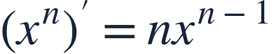
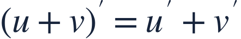
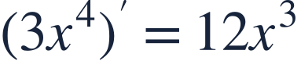
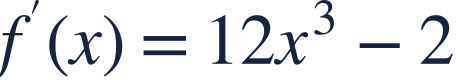
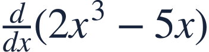

Power and sum rules
거듭제곱과 합의 미분
Differentiate a polynomial one term at a time.
다항식은 항별로 하나씩 미분합니다.
Differentiate a polynomial one term at a time.
다항식은 항별로 하나씩 미분합니다.

Keep each coefficient and reduce the power by one after multiplying.
계수를 유지하고 지수를 곱한 뒤 지수를 하나 줄이세요.

The derivative of a sum is the sum of the derivatives. Constants contribute zero.
합의 도함수는 각 도함수의 합입니다. 상수의 기여는 0입니다.

Apply the power rule to the variable terms.
변수가 있는 항에 거듭제곱 미분법을 적용합니다.

The constant 7 disappears because it does not change.
상수 7은 변하지 않으므로 미분하면 사라집니다.
Evaluate the derivative only after finding its formula.
도함수의 식을 구한 뒤 값을 대입합니다.
Reducing an exponent without multiplying by the original exponent misses a factor.
원래 지수를 곱하지 않고 지수만 줄이면 계수가 빠집니다.

Find the derivative as a function.
도함수의 식을 구하세요.